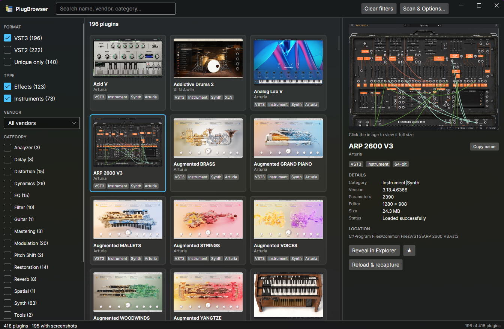

Jezric Software
|
PlugBrowser
A browsable, searchable catalog of every audio plugin (VST) installed on your PC, with a picture of each one's interface.
Useful for visually seeing all your plugins at a glance, seeing what plugins are installed on your system and finding the right plugin for your project.

Click the screenshot to enlarge
PlugBrowser scans your VST3 and VST2 folders, without actually loading a single plugin, then opens each
VST3 plugin in a separate, sandboxed process to photograph its editor. A plugin that hangs or crashes only costs one
entry, never the app, and copy-protected titles that stall other hosts load and capture normally.
- Gallery view with each plugin shown at its true proportions, plus a full-size view of any screenshot.
- Filter and search by format, effect or instrument, vendor, and category (Delay, Reverb, Synth and more), with counts that update as you narrow the results.
- Copy Title to clipboard with one click or by standard ctrl+C. Useful for pasting into plugin search box in your DAW.
- Duplicate finder that spots plugins installed as both VST2 and VST3 and shows how much disk space the redundant copies use.
- Reload & recapture for plugins whose first screenshot caught a registration or trial prompt.
- Your filters, chosen vendor and window layout are remembered between runs.
Download PlugBrowser
Free for Windows 10 or 11 (64-bit). Unzip anywhere and run PlugBrowser.App.exe, with nothing else to install.
The download isn't code-signed yet, so if Windows SmartScreen warns you, choose More info → Run anyway.
|
NetPlugHost
A VST3 plugin host library for .NET developers on Windows. It's the engine PlugBrowser relies on to load plugins and open their editors.
NetPlugHost wraps the Steinberg VST3 SDK in a small native DLL with a simple, flat C interface, and puts a C# library
of safe, disposable types on top. A .NET application can load VST3 plugins, run audio through them and show their
editors without touching C++ or the SDK's COM-style interfaces.
- Load and list plugins: open a
.vst3 bundle and see the name, vendor, category and version of every effect and instrument inside.
- Process audio in 32-bit float, mono or stereo. The host negotiates the channel layout and never silently substitutes a different one.
- Parameters: list them with their names, units and defaults, and get or set values, even from the UI thread while audio is running.
- State: save and restore a plugin's complete settings.
- Editors: show a plugin's own interface inside any window you supply, including editors that resize themselves.
- Proven on real plugins from Native Instruments, Plugin Alliance, Arturia and others. PlugBrowser uses it to open the editors of nearly two hundred commercial plugins.
using NetPlugHost;
using var module = Vst3Module.Load(@"C:\Program Files\Common Files\VST3\Some Plugin.vst3");
foreach (var info in module.GetClasses())
Console.WriteLine($"{info.Name} by {info.Vendor} ({info.Category})");
using var plugin = module.CreatePlugin(classIndex: 0);
plugin.Setup(sampleRate: 48000, maxBlockSize: 512, inputChannels: 2, outputChannels: 2);
plugin.SetActive(true);
View on GitHub
Free and open source for Windows x64 and .NET 9. Build it from source with Visual Studio 2022 (with the C++ desktop workload) and the .NET 9 SDK.
MIDI input isn't supported yet, so instruments load and show their editors but can't be played.
|
About These Projects
The software on this page is developed with the help of AI coding agents. The agents write much of the code, but
none of these projects start or end with them: each one goes through extensive design work by a human, deciding
what it should do, how it should look and behave, and how it should handle the hard cases, then steering and
refining the result until it works the way it was meant to.
Because so much of the code is written with AI help, it only feels right to share it freely. That's why every
project here is open source and free to use. The full source code is on
GitHub, where you can read it, build it yourself,
report a problem or suggest an improvement.
|